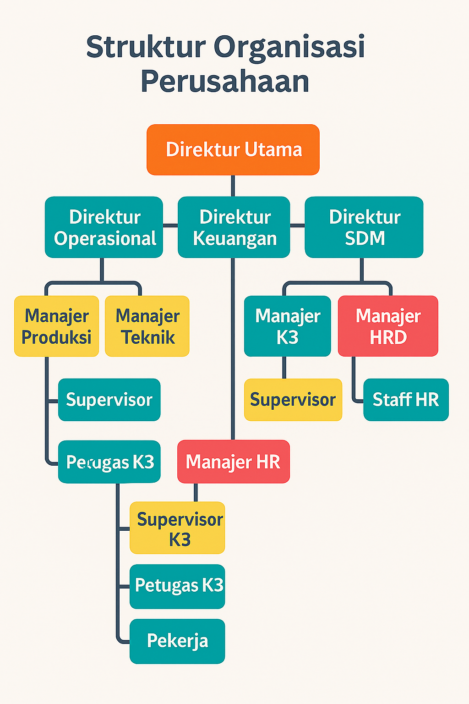

SMK3 & Manajemen Risiko
📖 Gambaran Umum SMK3 PT ANTAM Tbk
SMK3 (Sistem Manajemen Keselamatan dan Kesehatan Kerja) di PT ANTAM Tbk diterapkan untuk memastikan seluruh aktivitas operasional tambang dan smelter berjalan sesuai prinsip Good Mining Practice. Tujuan utama adalah mencegah kecelakaan kerja, melindungi kesehatan pekerja, dan mendukung keberlanjutan operasional.
🏢 Struktur Organisasi SMK3 PT ANTAM Tbk
Struktur SMK3 memastikan kebijakan, pengawasan, dan pelaksanaan keselamatan berjalan terintegrasi dari tingkat manajemen puncak hingga operasional. Setiap peran memiliki kewenangan, tanggung jawab, dan kompetensi yang jelas.
- Direktur Utama
- Manajer K3
- Supervisor K3
- Petugas K3
- Pekerja
- Petugas K3
- Komite K3 (lintas fungsi)
- Supervisor K3
- Manajer K3
👨💼 Direktur Utama
- Kebijakan & komitmen: Menetapkan visi, kebijakan K3, dan target kinerja.
- Penganggaran: Menyediakan sumber daya (SDM, dana, fasilitas).
- Akuntabilitas: Meninjau laporan K3, menyetujui CAPA strategis.
📋 Manajer K3
- Perencanaan SMK3: Program, KPI, dan rencana audit.
- Pengawasan: Sinkronisasi SOP, izin kerja, inspeksi, dan pelatihan.
- Pelaporan: Statistik insiden, investigasi, dan rekomendasi perbaikan.
👷 Supervisor K3
- Implementasi lapangan: Briefing pra-shift, inspeksi area, verifikasi SOP.
- Kontrol operasional: LOTO, housekeeping, jalur evakuasi, APD.
- Penanganan temuan: Tindak lanjut unsafe act/condition dan near miss.
🧑🔧 Petugas K3
- Inspeksi rutin: APAR/hydrant, alat kerja, area kritis.
- Audit & pelatihan: HIRARC, P3K, APD, izin kerja.
- Investigasi: Kronologi insiden, akar masalah, rekomendasi CAPA.
👥 Pekerja
- Kepatuhan SOP: Prosedur kerja aman sesuai pelatihan.
- APD: Penggunaan sesuai standar area/pekerjaan.
- Pelaporan: Laporkan bahaya, insiden, atau kondisi tidak aman.
🤝 Komite K3 (lintas fungsi)
- Forum K3: Rapat berkala, tinjau capaian, dan isu keselamatan.
- Budaya keselamatan: Kampanye, sosialisasi, dan saran perbaikan.
- Koordinasi: Menghubungkan manajemen dengan operasional.
🔗 Alur pelaporan & eskalasi
- Pekerja melapor ke Petugas K3 (insiden/unsafe condition).
- Petugas K3 investigasi awal → rekomendasi → laporan ke Supervisor K3.
- Supervisor K3 eksekusi perbaikan cepat → eskalasi ke Manajer K3 bila berdampak luas.
- Manajer K3 menyusun CAPA strategis → lapor ke Direktur Utama untuk dukungan/anggaran.
- Komite K3 memonitor tindak lanjut dan budaya keselamatan.
🎓 Kompetensi inti
- Direktur Utama: Kepemimpinan strategis, kebijakan, tata kelola.
- Manajer K3: SMK3/ISO 45001, HIRARC, audit, manajemen perubahan.
- Supervisor K3: Implementasi SOP, LOTO, inspeksi, koordinasi operasional.
- Petugas K3: P3K, inspeksi teknis, investigasi, pelatihan.
- Pekerja: Prosedur kerja aman, penggunaan APD, pelaporan bahaya.
- Komite K3: Fasilitasi, komunikasi lintas fungsi, kampanye budaya K3.
Catatan: Struktur ini mendukung prinsip “satu kebijakan, banyak eksekusi”: kebijakan terpusat, implementasi adaptif di lapangan, dengan akuntabilitas dan pelaporan yang jelas.
⚙️ Elemen SMK3 PT ANTAM Tbk
Sistem Manajemen Keselamatan dan Kesehatan Kerja (SMK3) di PT ANTAM Tbk terdiri dari elemen-elemen utama berikut:
- 📜 Kebijakan K3: Pernyataan komitmen manajemen puncak terhadap keselamatan dan kesehatan kerja, dituangkan dalam dokumen resmi dan disosialisasikan ke seluruh pekerja.
- 🎯 Perencanaan K3: Identifikasi bahaya, penilaian risiko (HIRARC), penetapan sasaran K3, serta program pengendalian risiko yang terukur.
- 👨🏫 Organisasi & Personel: Struktur organisasi K3 yang jelas, penunjukan personel K3, pembentukan komite K3, serta penetapan tanggung jawab di setiap level.
- 📚 Pelatihan & Kompetensi: Program pelatihan berkelanjutan (APD, P3K, LOTO, HIRARC, tanggap darurat) untuk meningkatkan keterampilan dan kesadaran pekerja.
- 🔍 Dokumentasi & Pengendalian Dokumen: SOP, instruksi kerja, formulir inspeksi, laporan audit, dan catatan pelatihan yang terdokumentasi dan dikendalikan.
- 🛠️ Implementasi & Operasional: Penerapan prosedur kerja aman, penggunaan APD, izin kerja khusus, inspeksi rutin, dan housekeeping area kerja.
- 🚨 Kesiapsiagaan & Tanggap Darurat: Rencana evakuasi, muster point, tim tanggap darurat, simulasi kebakaran, dan penyediaan peralatan darurat (APAR, hydrant, eye wash station).
- 📊 Pemantauan & Evaluasi: Audit internal, inspeksi berkala, pengukuran kinerja K3, serta pelaporan statistik kecelakaan dan near miss.
- 📝 Tindakan Perbaikan & Pencegahan (CAPA): Analisis akar masalah insiden, penerapan corrective action, preventive action, dan tindak lanjut hasil audit.
- ♻️ Perbaikan Berkelanjutan: Review manajemen, evaluasi efektivitas program K3, serta peningkatan sistem berdasarkan hasil audit dan masukan pekerja.
📊 Ringkasan Elemen SMK3
| Elemen | Tujuan | Contoh Implementasi |
|---|---|---|
| Kebijakan K3 | Menetapkan komitmen keselamatan | Dokumen kebijakan ditandatangani Direktur Utama |
| Perencanaan K3 | Mengelola risiko kerja | HIRARC, sasaran K3 tahunan |
| Organisasi & Personel | Menentukan peran & tanggung jawab | Struktur organisasi K3, komite K3 |
| Pelatihan & Kompetensi | Meningkatkan keterampilan pekerja | Pelatihan APD, P3K, tanggap darurat |
| Dokumentasi | Mengendalikan informasi K3 | SOP, formulir inspeksi, laporan audit |
| Implementasi & Operasional | Menjalankan prosedur kerja aman | Izin kerja, inspeksi rutin, housekeeping |
| Kesiapsiagaan & Tanggap Darurat | Melindungi pekerja saat darurat | Simulasi evakuasi, muster point, APAR |
| Pemantauan & Evaluasi | Mengukur efektivitas K3 | Audit internal, laporan kecelakaan |
| CAPA | Mencegah insiden berulang | Investigasi insiden, corrective action |
| Perbaikan Berkelanjutan | Meningkatkan sistem K3 | Review manajemen, update SOP |
🛡️ HIRARC: Identifikasi, Penilaian, & Pengendalian Risiko
HIRARC adalah metode untuk mengelola risiko di tempat kerja:
- 🔍 Identifikasi: Menentukan potensi bahaya (fisik, kimia, biologis, ergonomi).
- 📈 Penilaian: Menilai tingkat risiko berdasarkan kemungkinan dan dampak.
- ✅ Pengendalian: Menetapkan langkah pengendalian (engineering, administrasi, APD).
⚠️ Manajemen Risiko K3 PT ANTAM Tbk
Manajemen risiko adalah proses sistematis untuk mengidentifikasi, menganalisis, dan mengendalikan potensi bahaya di tempat kerja. Tujuannya adalah mencegah kecelakaan, penyakit akibat kerja, dan kerugian operasional.
📌 Prinsip Dasar
- 🔍 Identifikasi bahaya secara menyeluruh di setiap aktivitas kerja.
- 📈 Penilaian risiko berdasarkan probabilitas dan dampak.
- 🛠️ Pengendalian risiko sesuai hierarki kontrol.
- ♻️ Review dan perbaikan berkelanjutan berdasarkan data insiden dan audit.
🔄 Tahapan Manajemen Risiko
- Identifikasi Bahaya: Menentukan potensi sumber bahaya (fisik, kimia, biologis, ergonomi, psikososial).
- Penilaian Risiko: Menilai tingkat risiko berdasarkan kemungkinan dan dampak.
- Pengendalian Risiko: Menentukan tindakan pengendalian sesuai hierarki kontrol.
- Monitoring & Evaluasi: Memastikan efektivitas pengendalian dan melakukan perbaikan jika diperlukan.
📊 Klasifikasi Risiko
| Tingkat Risiko | Deskripsi | Tindakan |
|---|---|---|
| 🟢 Rendah | Risiko kecil, dampak ringan, jarang terjadi | Prosedur standar cukup, tetap diawasi |
| 🟡 Sedang | Risiko moderat, dampak sedang, bisa terjadi | Perlu pengendalian tambahan dan inspeksi rutin |
| 🟠 Tinggi | Risiko signifikan, dampak berat, sering terjadi | Wajib pengendalian teknis dan administratif |
| 🔴 Ekstrem | Risiko sangat tinggi, dampak fatal | Aktivitas dihentikan sampai risiko dikendalikan |
🛡️ Hierarki Pengendalian Risiko
- 🔧 Eliminasi: Menghilangkan bahaya sepenuhnya.
- ⚙️ Substitusi: Mengganti bahan/proses berbahaya dengan yang lebih aman.
- 🏗️ Engineering Control: Rekayasa teknis seperti pelindung mesin, ventilasi, drainase.
- 📋 Administrative Control: SOP, pelatihan, rotasi kerja, izin kerja khusus.
- 🦺 APD: Helm, masker, sepatu safety, baju tahan panas, sesuai jenis bahaya.
📌 Contoh Penerapan Risiko di Area Tambang
| Aktivitas | Bahaya | Risiko | Tingkat | Pengendalian |
|---|---|---|---|---|
| Pengangkutan material | Tabrakan kendaraan | Cedera serius | 🟠 Tinggi | Jalur terpisah, rambu kecepatan, pelatihan operator |
| Pengelasan di workshop | Percikan api | Kebakaran lokal | 🟡 Sedang | Hot work permit, APD, pemadam tersedia |
| Masuk ruang terbatas | Kekurangan oksigen | Fatal | 🔴 Ekstrem | Gas detector, izin kerja confined space, rescue standby |
| Handling bahan kimia | Kontak kulit/mata | Keracunan ringan | 🟡 Sedang | SDS, APD kimia, eye wash station |
📈 Monitoring & Evaluasi
- 📋 Audit internal dan inspeksi rutin tiap bulan.
- 📊 Statistik insiden dan near miss dianalisis tiap triwulan.
- 🗂️ CAPA (Corrective and Preventive Action) ditindaklanjuti dan didokumentasikan.
- 🔁 Review manajemen tahunan untuk peningkatan sistem.
📊 Matriks Risiko & Contoh Penilaian
| Tingkat Dampak | Probabilitas | Tingkat Risiko | Contoh |
|---|---|---|---|
| Ringan | Jarang | Rendah | Luka gores kecil di workshop |
| Sedang | Sering | Sedang | Paparan debu di area tambang |
| Berat | Jarang | Sedang | Patah tulang akibat jatuh dari ketinggian |
| Fatal | Sering | Tinggi | Tanah longsor di tambang terbuka |
Contoh Penilaian: Risiko tanah longsor dikategorikan sebagai risiko tinggi karena dampaknya fatal dan probabilitasnya sering terjadi pada musim hujan. Pengendalian dilakukan dengan monitoring geoteknik, sistem drainase, dan evakuasi darurat.
Matriks penilaian risiko 5x5
Klik sel untuk melihat detail. Matriks menggabungkan tingkat dampak (vertikal) dan probabilitas (horizontal) untuk menentukan tingkat risiko.
| Tingkat Dampak | Probabilitas | |||||
|---|---|---|---|---|---|---|
| Jarang | Kadang | Sering | Sangat sering | Hampir pasti | ||
| Ringan | ||||||
| Sedang | ||||||
| Berat | ||||||
| Fatal | ||||||
| Katastropik | ||||||
Detail risiko
Kombinasi: —
Tingkat risiko: —
Contoh: —
Pengendalian (HIRARC): —